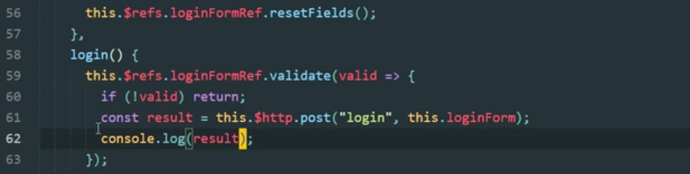
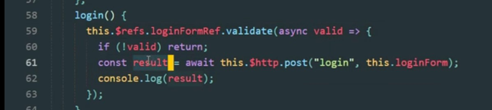

Promise
Promise是一个对象，它代表了一个异步操作的最终完成或者失败
1 | function successCallback(result) { |
如果函数createAudioFileAsync()被重写为返回Promise的形式
1 | const promise = createAudioFileAsync(audioSettings) |
我们把这个称为异步函数调用，在使用promise时，会有以下约定
- 在本轮事件循环运行完成之前，回调函数是不会被调用的
- 即使异步操作已经完成，在这之后会通过then()添加的回调函数也会被调用
- 多次调用then()可以添加多个回调函数，它们会按照插入顺序进行执行
Async
axios获取数据，返回一个promise对象，不会返回具体的数值

当使用async/awit来封装的时候会返回具体的数值

Async/await是以一种更舒适的方法适用promise的一种特殊语法,同时它也非常易于理解和使用
1 | async function f() { |
在函数前面async这个关键字总是可以返回一个promise，其它的值将自动被包装在一个resolved的promise中
下列代码相当于上述代码
1 | async function f() { |
async 确保了函数返回一个promise，也会将非promise的值包装进去
Await
await关键字的作用是等到promise完成(settle)并返回结果，下面例子就是1s后resolve的promise
1 | async function f(){ |
这个函数在执行的时候，暂停在了（*）那一行，并在promise settle是，拿到reslut作为结果继续往下执行，await实际上会暂停函数的执行，直到promise状态变为settled，然后以promise的结果继续执行。这个行为不会耗费任何CPU资源，js引擎可以同时处理其他任务，相对于promise.then，它只是获取promise结果的一个更优雅的语法，同时也更易于读写